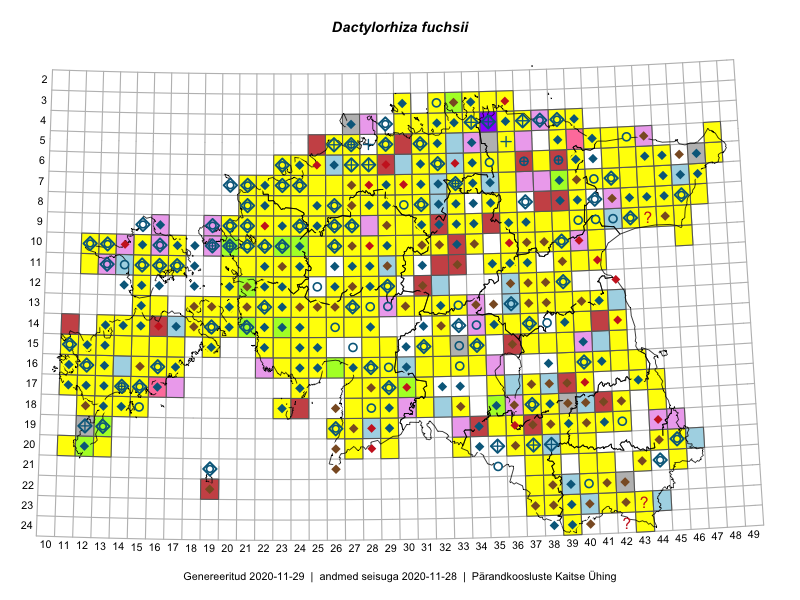

Dactylorhiza fuchsii
Uuendatud: 2016-12-01
Kaardile koondatud taksonid: Dactylorhiza fuchsii (Druce) Soó

Kaart põhineb 656 kirjel.
Kuvatud viited 20 esimesele andmebaasikirjele, ülejäänud PlutoFis
- Toomas Kukk, Eerik Leibak: 2015-08-09: 14-15: ala
- Toomas Kukk, Eerik Leibak: 2015-08-09: 14-15: GPS punkt
- Toomas Kukk, Thea Kull, Timo Luhamäe, Ott Luuk, Peedu Saar: 2015-06-28: 13-26: ala
- Rein Kalamees, Kersti Püssa: 2015-08-04: 03-33: ala
- Rein Kalamees, Kersti Püssa: 2015-08-04: 03-33: GPS punkt
- Peedu Saar, Liina Oja: 2015-07-24: 09-45: GPS punkt
- Peedu Saar, Liina Oja: 2015-07-24: 09-45: GPS punkt
- Peedu Saar, Liina Oja: 2015-07-24: 09-45: GPS punkt
- Peedu Saar, Liina Oja: 2015-07-24: 09-45: GPS punkt
- Peedu Saar: 2015-07-04: 18-44: GPS punkt
- Peedu Saar: 2015-07-15: 15-39: GPS punkt
- Peedu Saar, Ott Luuk: 2015-07-27: 11-35: GPS punkt
- Peedu Saar, Ott Luuk: 2015-06-21: 14-42: ala
- Ott Luuk, Peedu Saar: 2015-07-27: 11-35: ala
- Peedu Saar: 2015-07-04: 18-44: ala
- Peedu Saar: 2015-07-15: 15-39: ala
- Ott Luuk: 2015-06-28: 13-26: ala
- Peedu Saar, Liina Oja: 2015-07-20: 08-44: ala
- Peedu Saar, Liina Oja: 2015-07-21: 06-44: ala
- Peedu Saar, Liina Oja: 2015-07-22: 08-45: ala